Спортивный клуб « SPIRIT »
Здраствуйте! Это сеть фитнес-клубов, у нас собраны лучшие упражнения для точечного развития мышц спины, груди, рук, пресса и ног, а также упомянем упражнения, развивающие все группы мышц.
Спина
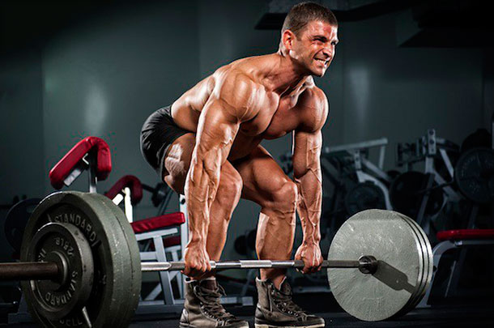
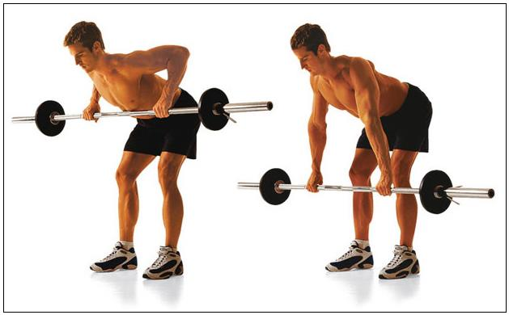
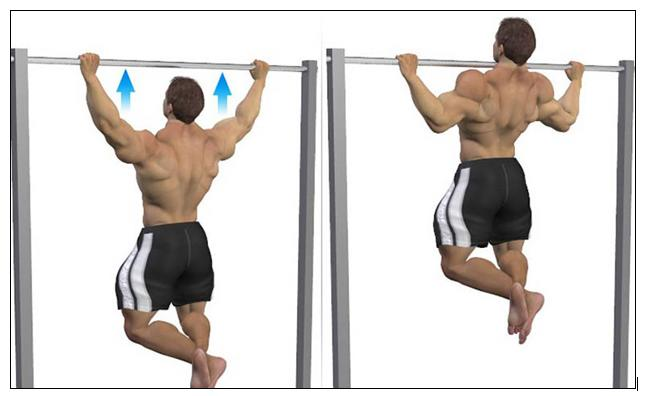
Cтановая тяга
Базовое упражнение, помогающее укрепить почти весь мышечный корсет, ведь задействованы главные группы мышц. Переходим к делу:
ноги ставим на ширине плеч;
приседаем и берем гриф штанги так, чтобы руки соблюдали ширину плеч;
наклоняем туловище вперед, чтобы спина была выпрямленной, при этом грудная клетка расправлена;
не двигая спиной, берем вес, при этом напрягается лишь мускулатура ног;
выпрямите тело, а затем опустите инвентарь, соблюдая ту же траекторию.
Тяга штанги к поясу
Лучшие занятия для развития широчайших мышц – тяга штанги. При тяге штанги к поясу укрепляется их нижняя часть.
Если желаете сделать упор на верхнюю часть, то следует поднимать штангу к груди.
Подтягивания на перекладине
Какие занятия хорошо укрепляют спину? Естественно, подтягивания, которые в зависимости от вариаций напрягают разные группы мышц.
Если вы только начинаете, то не стоит сразу применять все варианты подтягиваний, начните с положения – руки чуть шире плеч.
Не забывайте, что проработать ширину поможет широкий хват, а толщину спины – подтягивания за голову.
Грудь
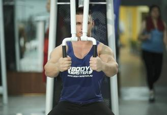
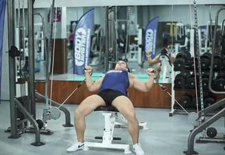
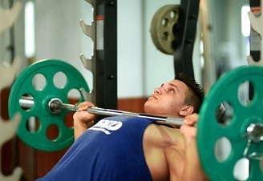
Жим штанги лежа на наклонной скамье
Лягте на наклонную скамью, возьмите штангу, сняв ее с подставки, и поднимите над собой. На вдохе опустите штангу до уровня груди,
на выдохе верните ее в исходную позицию, сохранив напряжение в мышцах. Верняя часть груди.
Жим рук вверх с нижнего блока (сидя на наклонной скамье).
Сядьте на скамью и возьмите рукоятки, прикреплённые к нижнему блоку. Локти согнуты примерно под прямым углом.
Начните выпрямлять руки и сводить их вместе перед собой над грудью. Во время жима сводите лопатки.
В верхней точке задержитесь и вернитесь в исходное положение.
Упражнение "Бабочка" (Сведение рук в тренажере).
Сядьте на тренажер, обеими руками возьмитесь за ручки и медленно сведите их перед собой.
Секунду удерживайте напряжение, которое возникнет в мышцах средней части груди, а затем вернитесь в исходную позицию.
Руки
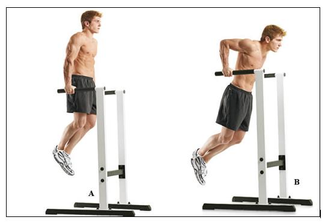
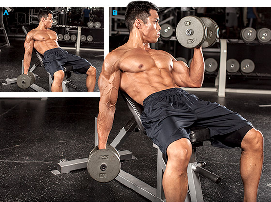
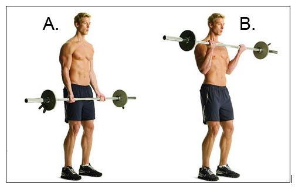
Подъем штанги на бицепс
Возьмите штангу хватом снизу. Расстояние между руками должно немного превышать ширину плеч. Слегка согните ноги в коленях,
прижмите плечи к туловищу (не позволяйте им скользить вперед или назад), и, напрягая бицепс, медленно поднимайте штангу к груди.
Если вы раскачиваете вес или используете инерцию движения, это означает что вес слишком тяжелый для вас. Задержитесь на 1 секунду в верхней фазе упражнения,
а затем опускайте вес, соблюдая полную амплитуду движений. Повторите упражнение.
Cгибание рук с гантелями с супинацией на наклонной скамье
Установите наклон скамьи под углом 60°. Держите гантели так, чтобы ладони были обращены друг к другу. Медленно поднимайте гантель правой рукой, пока она не достигнет уровня груди.
Когда будете поднимать гантель, постепенно разворачивайте руку так, чтобы ладони были обращены внутренней частью к туловищу. Следите за тем, чтобы во время упражнения плечи не двигались вперед, держите их в вертикальном положении.
Опустите гантель так, чтобы рука полностью разогнулась, а затем повторите упражнение левой рукой.
Отжимания от брусьев / обратные отжимания
Исходное положение: примите упор на параллельных брусьях на вытянутых руках. Медленно сгибайте руки в локтях, опуская туловище между брусьев до тех пор,
пока плечи не примут положение параллельное полу. Напрягая трицепсы и мышцы груди, разгибайте руки, пока не вернетесь в исходное положение. Повторите упражнение.
Пресс
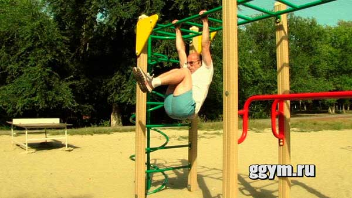
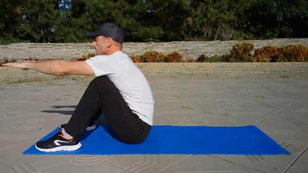
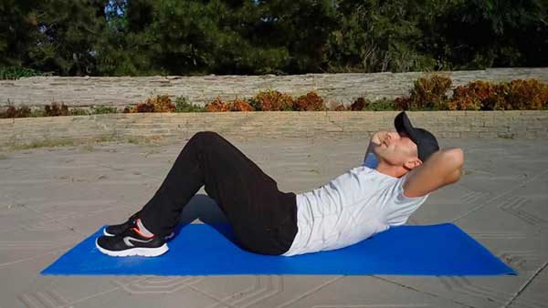
Скручивания лежа
Самое важное, при выполнении упражнения должна меняться длина Ваших мышц пресса. При скручивании они должны максимально укорачиваться и сокращаться, при возвращении назад – удлиняться и растягиваться.
Не стремитесь, выполняя скручивания, поднимать тело слишком высоко. Этого не требуется.
Ситап
Энергично поднимите руки и быстро подтяните за ними тело, чтобы оказаться в положении сидя, как показано на фото. Делайте подъем тела на выдохе. Затем на вдохе плавно вернитесь в исходное положение.
Ситап следует выполнять без пауз, непрерывно поднимая и опуская тело. Здесь действует то же правило сокращения и растяжки мышц пресса, что и в упражнении скручивания. Растягивайте пресс, когда лежите на коврике,
и максимально сокращайте, когда сидите.
Подтягивания коленей к груди на турнике
На выдохе энергично подтяните колени к груди, одновременно сгибая ноги в коленях. Задержитесь в этом положении на мгновение, почувствовав напряжение и сокращение мышц пресса. Затем плавно, на вдохе,
верните ноги в исходное положение. Выполняйте подъемы ног непрерывно, без длительных пауз между повторениями.
Ноги
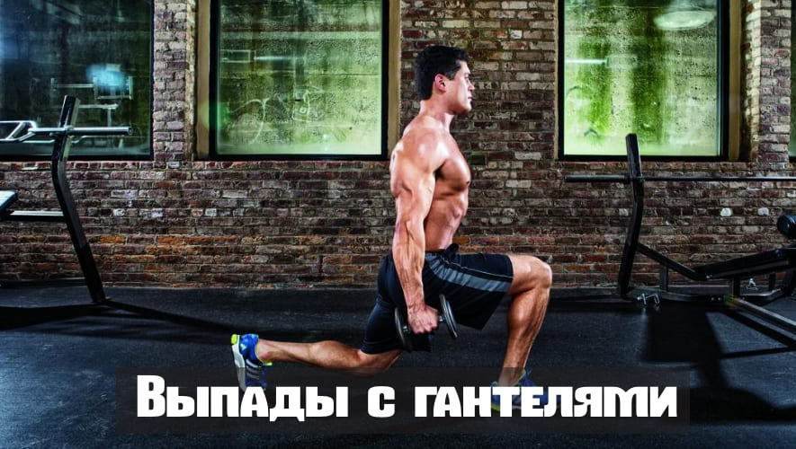
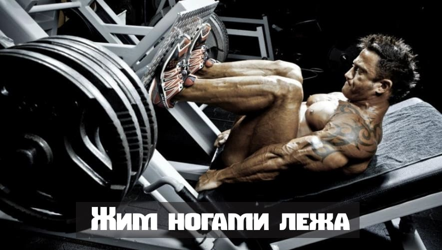
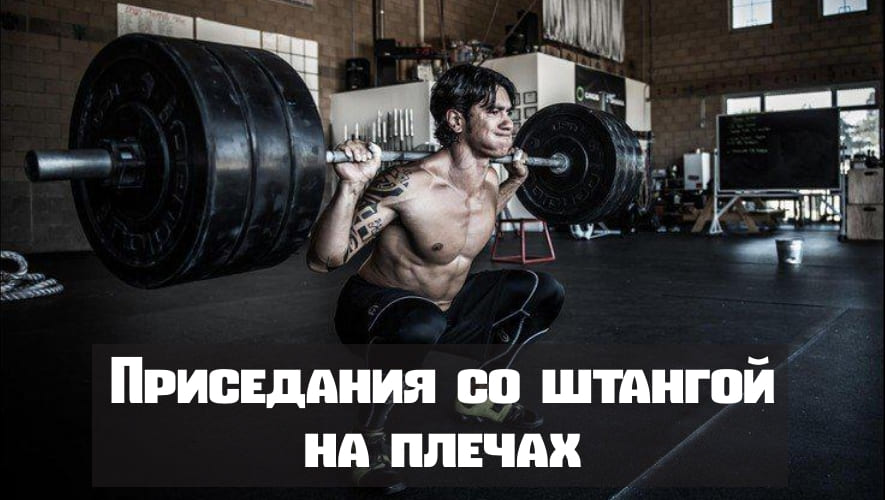
Приседания со штангой на плечах
Думаю никого не удивил этот выбор, ведь все прекрасно знают, чтоб развить массивные ноги, надо приседать с большим весом. Вариант со штангой на плечах, задействует все мышцы ног и ягодицы, а также все тело целиком.
Для того чтобы больше работали квадрицепсы, надо приседать с узкой постановкой ног. Примерно на ширине плеч. Если же расставить их шире, то большая часть нагрузки сместится на бицепс бедра и ягодицы.
То же самое касается и глубины приседа. Чем ниже вы опускаетесь, тем больше в работу включаются все 3 ягодичные мышцы.
Жим ногами лёжа
Еще одно базовое упражнение, которое развивает все мышцы ног. Если же мы хотим сместить акцент на какую-то определенную группу, то надо будет поменять расположение ступней на подвижной платформе. Чем ноги ближе к верхнему краю,
тем сильней задействуется задняя часть бедра и ягодичные. И наоборот, постановка ног ближе к нижнему краю больше нагрузить квадрицепсы.
Выпады с гантелями
Это отличное силовое упражнение, направленное на развитие ног. В большей степени нагрузка приходится на квадрицепсы и ягодичные мышцы. Существует множество модификаций данного упражнения, но нас интересует классический вариант,
стоя на месте с гантелями. Именно его мы и возьмем в свою тренировочную программу.
Все группы мышц
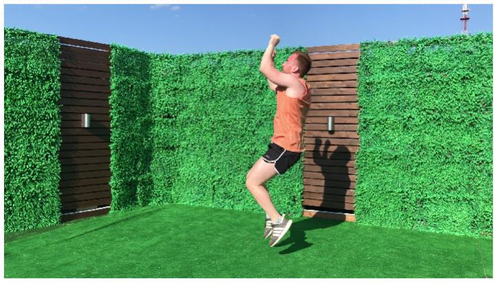
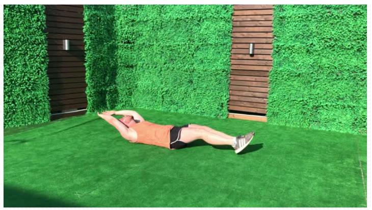
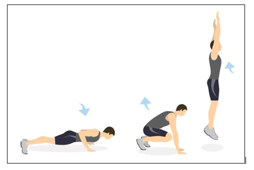
Бёрпи с отжиманиями
Вы нагружаете: переднюю и заднюю поверхность бедра, ягодицы, икры, грудные, трицепсы, дельты, пресс. Выполняются приседание, планка и отжимание.Техника:
из положения стоя глубокий присед; переход прыжком в планку; отжимание; из планки прыжок в присед; выпрыгивание из приседа вверх.
Упражнение на пресс с удержанием рук и ног в воздухе
Каждый хочет обладать мощным прессом. Пресс удерживает внутренние органы и отвечает за ровную осанку. А ведь она считается основой красоты и здоровья. Помните, чтобы увидеть долгожданные кубики,
необходим дефицит калорий. Техника: из положения лёжа вытяните руки и ноги так, чтобы они не задевали пол; согнитесь, чтобы грудь и колени одновременно стремились соприкоснуться, при этом поясница должна быть прижата к земле;
в пиковой точке максимально напрягите мышцы живота и задержитесь на одну секунду; разогнитесь, отводя руки и ноги в противоположные стороны; старайтесь держать руки и ноги прямо, не задевая пола.
Бег на месте с высоким подниманием бедра и ударами вверх
Упражнение эффективно развивает совместную координацию верха и низа тела. Бонусом вы усиленно тратите калории и формируете упругие ноги, при этом максимально сжигая жировую прослойку.
Техника: из положения стоя поднимите руки вверх и сожмите кулаки;взрывными движениями начинайте выносить колено вверх до параллели с землёй; кулаками делайте удары вверх по воображаемой груше.Спина должна быть прямая.
Наверх